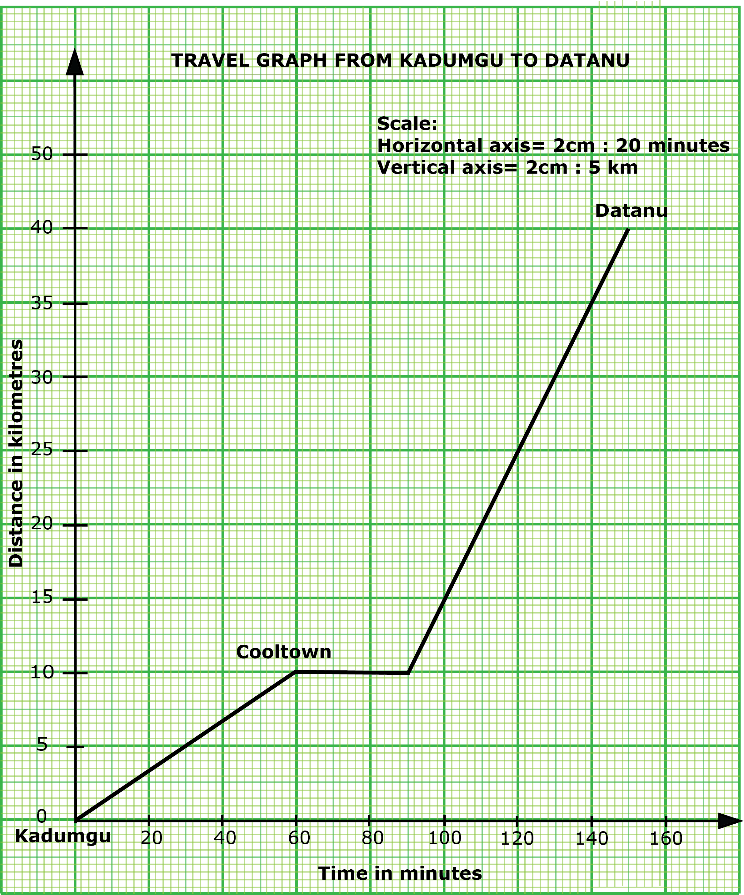

GUIDE (BECE - 2025)
You have 60 minutes for each section. Try to work on your speed as you prepare towards the final exam.
Good luck and remember to check your answers with the solutions provided. If you have any questions, feel free to ask your teacher or refer to the video lessons for more help.
Section A - Multiple Choice Questions
This section contains 40 multiple choice questions. You have 60 minutes to complete it.
Each question has four options labeled A to D. Select the correct answer for each question.

Section B
Question 1
-
Given that $P = $ {multiples of $3$} and $Q = $ {positive even numbers} are subsets of $\mu = $ {$x: 1 < x \leq 20$, where $x$ is a counting number}:
(i) list the elements in $P \cap Q$;
(ii) list all the subsets in $P \cap Q$.
-
If $\dfrac{1}{y} = 3k - \dfrac{2}{x}$,
(i) make $y$ the subject of the relation.
(ii) using the result in ($b$)(i), find the value of $y$ when $x = -1$ and $k = 2$.
Solution
$\mu = $ {$x: 1 < x \leq 20$, where $x$ is a counting number}
$\Rightarrow \mu = $ {$2, 3, 4, 5, ..., 20$}
$P = $ {multiples of $3$}
$\Rightarrow$ $P = $ {3, 6, 9, 12, 15, 18}
$Q = $ {positive even numbers}
$\Rightarrow Q = $ {2, 4, 6, 8, 10, 12, 14, 16, 18, 20}
(i) $P \cap Q$
$\Rightarrow$ {6, 12, 18}
(ii) Subsets of $P \cap Q$
$\Rightarrow$ { }, {6}, {12}, {18}, {6, 12}, {6, 18}, {12, 18}, {6, 12, 18}
Solution
$\dfrac{1}{y} = 3k - \dfrac{2}{x}$
(i) Making $y$ the subject:
$\Rightarrow \dfrac{1}{y} = \dfrac{x(3k) - 2}{x}$
$\Rightarrow \dfrac{1}{y} = \dfrac{3kx - 2}{x}$
Cross multiplying:
$\Rightarrow y(3kx - 2) = x$
$\Rightarrow \dfrac{y(3kx - 2)}{3kx - 2} = \dfrac{x}{3kx - 2}$
$\Rightarrow y = \dfrac{x}{3kx - 2}$
(ii) when $x = -1$ and $k = 2$
$\Rightarrow y = \dfrac{-1}{3(2)(-1) - 2}$
$\Rightarrow y = \dfrac{-1}{-6 - 2}$
$\Rightarrow y = \dfrac{-1}{-8}$
$\Rightarrow y = \dfrac{1}{8}$
$\therefore$ when $x$ is -1 and $k$ is 2, $y$ is $\frac{1}{8}$
Question 2
-
Evaluate $\dfrac{4000 \times 0.35}{0.05}$, leaving the answer in standard form.
-
Mr Boakye gets $10\%$ commission on type $P$ house he sells and $15\%$ on type $Q$ house. He sells 3 type $P$ houses at Gh₵ $700,000.00$ each and 4 type $Q$ at Gh₵ $1,400,000.00$ each. Calculate the total commission he makes.
Solution
$\dfrac{4000 \times 0.35}{0.05}$
$\Rightarrow \dfrac{(4 \times 10^3) \times (35 \times 10^{-2})}{5 \times 10^{-2}}$
$\Rightarrow \dfrac{4 \times 10^3 \times 35}{5}$
$\Rightarrow 4 \times 10^3 \times 7$
$\Rightarrow 28 \times 10^3$
$\Rightarrow 2.8 \times 10^1 \times 10^3$
$\Rightarrow 2.8 \times 10^{1+3}$
$\Rightarrow 2.8 \times 10^4$
Solution
Cost of type $P$ house $\Rightarrow$ Gh₵ $700,000.00$
Number of type $P$ houses sold $\Rightarrow 3$
Total amount received for type $P$:
$\Rightarrow 3 \times 700,000$
$\Rightarrow$ Gh₵ $2,100,000$
Commision on type $P$:
$\Rightarrow 10\%$ of $2,100,000$
$\Rightarrow$ Gh₵ $210,000$
Cost of type $Q$ house $\Rightarrow$ Gh₵ $1,400,000.00$
Number of type $Q$ houses sold $\Rightarrow 4$
Total amount received for type $Q$:
$\Rightarrow 4 \times 1,400,000$
$\Rightarrow$ Gh₵ $5,600,000$
Commision on type $Q$:
$\Rightarrow 15\%$ of $5,600,000$
$\Rightarrow$ Gh₵ $840,000$
Total commision received:
$\Rightarrow$ $210,000 + 840,000$
$\Rightarrow$ Gh₵ $1,050,000$
$\therefore$ the total commission received for type P and type Q is Gh₵ 1,050,000
Question 3
-
Given that $a = \begin{pmatrix} 2 \\ 3 \end{pmatrix}$, $b = \begin{pmatrix} x \\ -3 \end{pmatrix}$ and $c = \begin{pmatrix} 7 \\ 3 \end{pmatrix}$, find:
(i) the value of $x$, if $2a + b = c$;
(ii) $d = c - 3a$;
(iii) $|d|$
-
A Polytank contains $4500$ litres of water and $\dfrac{1}{5}$ of the water is used for cleaning.
(i) Find the volume of water used for cleaning.
(ii) What percentage of water is left in the tank?
Solution
$a = \begin{pmatrix} 2 \\ 3 \end{pmatrix}$, $b = \begin{pmatrix} x \\ -3 \end{pmatrix}$ $c = \begin{pmatrix} 7 \\ 3 \end{pmatrix}$
(i) $2a + b = c$
$\Rightarrow 2\begin{pmatrix} 2 \\ 3 \end{pmatrix} + \begin{pmatrix} x \\ -3 \end{pmatrix} = \begin{pmatrix} 7 \\ 3 \end{pmatrix}$
$\Rightarrow \begin{pmatrix} 4 \\ 6 \end{pmatrix} + \begin{pmatrix} x \\ -3 \end{pmatrix} = \begin{pmatrix} 7 \\ 3 \end{pmatrix}$
Equating the $x$ components:
$\Rightarrow 4 + x = 7$
$\Rightarrow \hspace{0.85cm} x = 7 - 4$
$\Rightarrow \hspace{0.85cm} x = 3$
$\therefore$ $x$ is 3
(ii) $d = c - 3a$
$\Rightarrow d = \begin{pmatrix} 7 \\ 3 \end{pmatrix} - 3\begin{pmatrix} 2 \\ 3 \end{pmatrix}$
$\Rightarrow d = \begin{pmatrix} 7 \\ 3 \end{pmatrix} - \begin{pmatrix} 6 \\ 9 \end{pmatrix}$
$\Rightarrow d = \begin{pmatrix} 7 - 6 \\ 3 - 9 \end{pmatrix}$
$\Rightarrow d = \begin{pmatrix} 1 \\ -6 \end{pmatrix}$
(iii) $|d|$
$\Rightarrow \sqrt{(1)^2 + (-6)^2}$
$\Rightarrow \sqrt{1 + 36}$
$\Rightarrow \sqrt{37}$ units
Solution
Volume of water $= 4500$ litres
(i) Volume used for cleaning
$\Rightarrow \dfrac{1}{5} \times 4500$ litres
$\Rightarrow 900$ litres
$\therefore 900$ litres of water was used for cleaning.
(ii) Volume left in tank:
$\Rightarrow$ Total volume $-$ volume used for cleaning
$\Rightarrow 4500 - 900$
$\Rightarrow 3600$ litres
Percentage of water left:
$\Rightarrow \dfrac{\text{volume left}}{\text{Total volume}} \times 100\%$
$\Rightarrow \dfrac{3600}{4500} \times 100\%$
$\Rightarrow \dfrac{36}{45} \times 100\%$
$\Rightarrow \dfrac{4 \times 9}{5 \times 9} \times 100\%$
$\Rightarrow \dfrac{4}{5} \times 100\%$
$\Rightarrow 4 \times 20\%$
$\Rightarrow 80\%$
$\therefore$ 80% of water is left in the tank.
Question 4
-
A woman borrowed Gh₵ $5,300.00$ to pay for her child's university fees. If she borrowed at a rate of $8\%$ simple interest per annum for 9 months, find the interest paid.
-
A father shared his piece of land to his three children. The first child had $\frac{2}{5}$ of the land and the second had $5$ acres more than the first. If the third child had $20$ acres, find how many acres of land the:
(i) father shared;
Solution
(i) let $x =$ the total acres of land shared
$\Rightarrow$ First child's share $= \frac{2}{5}x$
$\Rightarrow$ Second child's share $= \frac{2}{5}x + 5$
Third child's share $= 20$
$\Rightarrow x = \frac{2}{5}x + \left(\frac{2}{5}x + 5\right) + 20$
$\Rightarrow x = \frac{2}{5}x + \frac{2}{5}x + 5 + 20$
$\Rightarrow x = \frac{4}{5}x + 25$
$\Rightarrow 5x = 4x + 5(25)$
$\Rightarrow 5x - 4x = 125$
$\Rightarrow x = 125$ acres
$\therefore$ the total land shared by the father was 125 acres.
(ii) first child received;
(iii) second child received.
Solution
Principal, $P =$ Gh₵ $5,300.00$
Rate, $R = 8\%$
Time, $T = 9$ months
$\Rightarrow T = \frac{9}{12} = \frac{3}{4}$
Interest, $I = \dfrac{P \times R \times T}{100}$
Interest, $I = \dfrac{5,300 \times 8 \times \frac{3}{4}}{100}$
Interest, $I = \dfrac{5,300 \times 2 \times 3}{100}$
Interest, $I = 53 \times 6$
Interest, $I =$ Gh₵ $318.00$
$\therefore$ the interest paid was Gh₵ $318.00$
Solution
(ii) First child's share:
$\Rightarrow \dfrac{2}{5}x$
$\Rightarrow \dfrac{2}{5} \times 125$
$\Rightarrow 2 \times 25$
$\Rightarrow 50$ acres
$\therefore$ the first child received 50 acres.
(iii) The second child's share:
$\Rightarrow \dfrac{2}{5}x + 5$
$\Rightarrow \left(\dfrac{2}{5} \times 125\right) + 5$
$\Rightarrow \left(2 \times 25\right) + 5$
$\Rightarrow 50 + 5$
$\Rightarrow 55$ acres
$\therefore$ the second child received 55 acres.
Question 5
-
The pie chart shows the weight (in kg) of items Mrs. Mensah bought for her household.
(i) What angle represents fish?
(ii) If she bought a total of 20 kg of items,
($\alpha$) what is the weight of flour bought?
($\beta$) express, correct to one decimal place, the weight of sugar as a percentage of the weight of rice. -
In a class of 30 students, five wear glasses. If a student is selected at random from the class, what is the probability that the student does not wear glasses?
Solution
(i) let $x =$ angle of sector for Fish
$\Rightarrow 360^\circ = x + 36^\circ + 90^\circ + 54^\circ + 108^\circ$
$\Rightarrow 360^\circ = x + 288^\circ$
$\Rightarrow 360^\circ - 288^\circ = x $
$\Rightarrow x = 72^\circ $
$\therefore$ the angle representing fish is 72°
(ii) total weight $= 20$ kg
($\alpha$) angle of sector for flour $= 54^\circ$
Weight of flour:
$\Rightarrow \dfrac{\text{angle for flour}}{\text{total angle}} \times \text{total weight}$
$\Rightarrow \dfrac{54^\circ}{360^\circ} \times 20$ kg
$\Rightarrow \dfrac{3 \times 18}{20 \times 18} \times 20$ kg
$\Rightarrow \dfrac{3}{20} \times 20$ kg
$\Rightarrow 3$ kg
$\therefore$ the weight of flour bought was 3 kg
($\beta$)
Angle of sector for sugar $ = 36^\circ$
Angle of sector for rice $ = 108^\circ$
Weight of sugar as percentage of weight of rice:
$\Rightarrow \dfrac{36^\circ}{108^\circ} \times 100\%$
$\Rightarrow \dfrac{1 \times 36}{3 \times 36} \times 100\%$
$\Rightarrow \dfrac{1}{3} \times 100\%$
$\Rightarrow \dfrac{100}{3}\%$
$\Rightarrow 33.3\%$
$\therefore$ the weight of sugar as a percentage of weight of rice is 33.3%
Solution
Total students in the class $= 30$
Students wearing glasses $= 5$
Students not wearing glasses:
$\Rightarrow 30 - 5$
$\Rightarrow 25$
Probability $= \dfrac{\text{successful outcomes}}{\text{total outcomes}}$
Probability (student not wearing glasses):
$\Rightarrow \dfrac{25}{30}$
$\Rightarrow \dfrac{5 \times 5}{6 \times 5}$
$\Rightarrow \dfrac{5}{6}$
$\therefore$ the probability of selecting a student not wearing glasses is $\frac{5}{6}$
Question 6
-
Using a scale of 2 cm to 20 minutes on the horizontal axis and 2 cm to 5 km on the vertical axis, draw a distance-time graph for Adamu's journey.
-
Use the graph to determine the:
(i) distance from Cooltown to Datanu;
(ii) total time (in minutes), taken by Adamu to make the whole journey including the rest time;
(iii) average speed of Adamu from Cooltown to Datanu.
-
If Adamu did not rest but travelled to Datanu within the time, what was his average speed?
Adamu was travelling a distance of $40$ km from Kadumgu to Datanu. Sixty minutes after starting the journey, he made a stop at Cooltown, $10$ km from Kadumgu to rest for $30$ minutes. He then continued the journey from Cooltown and reached Datanu 60 minutes later.
Solution
($a$)
Solution
($b$)
(i) distance from Cooltown to Datanu:
From the graph, distance from Cooltown to Datanu is 30 km
(ii) total time taken:
From the graph, the total time taken (in minutes) is 150 minutes.
(iii) From Cooltown to Datanu:
distance $= 30$ km
time $= 60 \ \text{mins}$
time $= 1 \ \text{hr}$
speed $= \dfrac{\text{distance}}{\text{time}}$
speed $= \dfrac{30 \ \text{km}}{1 \ \text{hr}}$
speed $= 30 \ \text{km}/ \text{h}$
($c$)